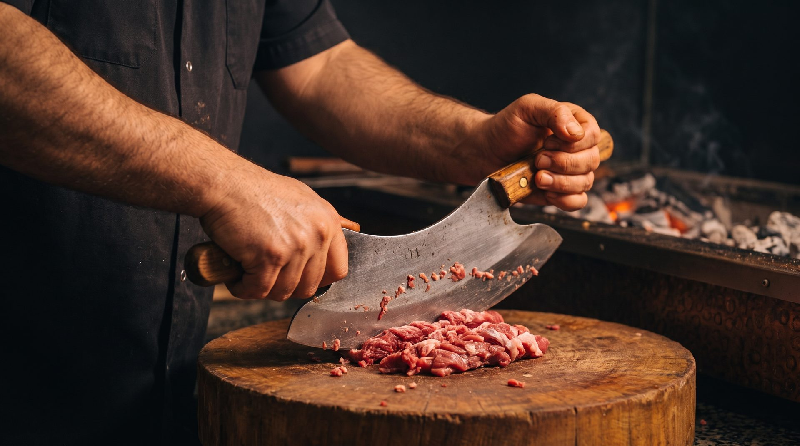
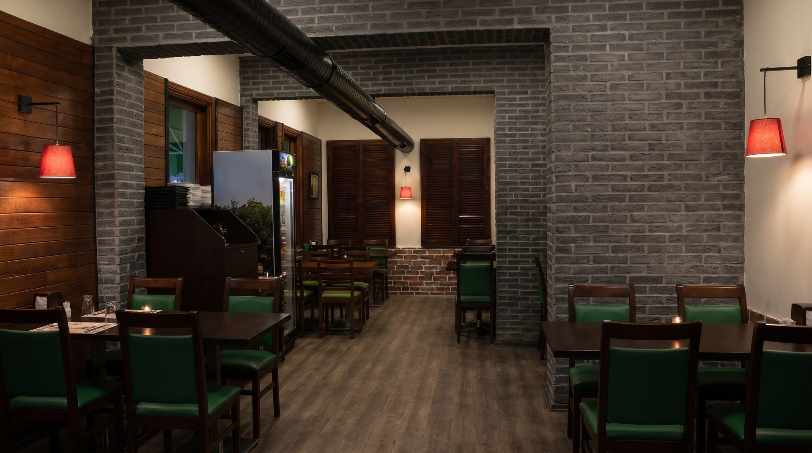

1998'den beri, zırhla.
Bakırköy, Cevizlik Mahallesi'nde bir kebap ve dürüm salonu.

Usul değişmedi.
Öz Bakırköy Dürümcüsü 1998'de Bakırköy'de açıldı. O günden bu yana kebap da dürüm de ocak başında, kömür ateşinde pişiyor.
Adana'nın, Urfa'nın ve dürümlerimizin eti makineden geçmez. Usta, eti tahtada iki saplı zırh bıçağıyla kıyar ve yassı şişe elle sarar. Urfa'dan Adana'ya, beytiden pirzolaya kebabın her çeşidi bu ocaktan çıkar.
Ürünlerimiz hijyen koşullarında, temiz mutfak anlayışıyla hazırlanır; misafirlerimizin sağlığı her şeyin önünde gelir.
Yıl yıl
- 1998
Kuruluş
Öz Bakırköy Dürümcüsü Bakırköy'de açıldı.
- 2018
Yirminci yıl
Yirminci yılımızı misafirlerimizle kutladık.
- 2026
Bugün
Zırh kıyması, kömür ateşi ve sıcak lavaş: 28 yıldır aynı usulle.

Salon ve teras
Salonumuzun tüm katlarında televizyon var. Düğün, nişan ve söz yemeklerini, iş ve sosyal toplantıları da burada ağırlıyoruz; terasta kırmızı sandalyeler sizi bekler.
Bakırköy Marmaray istasyonuna ve Cumhuriyet Meydanı'na yürüme mesafesindeyiz.